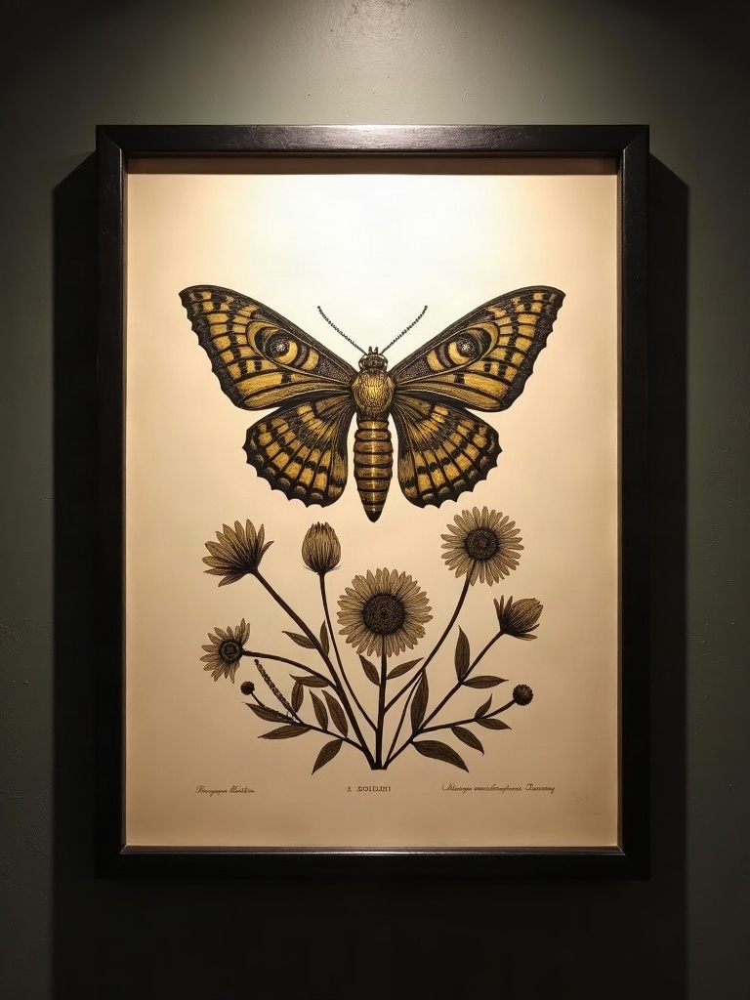

DIY Steampunk Wall Decor: Gear Clocks and Copper Pipe Shelves
Updated 2026-11-14
Quick answer: The easiest DIY steampunk wall decor combines two projects. The first is a gear clock, made by fitting a quartz clock movement into a painted wooden disc layered with gears. The second is a copper pipe shelf, made by joining copper pipe and fittings into brackets that hold a wooden board. Both need only basic tools, and each can be finished in a weekend.
Steampunk wall decor works best when it looks functional. Picture visible mechanisms, honest metal and wood that seems to have a history. These two builds deliver exactly that. A clock with turning hands and a shelf that holds real curiosities give your wall purpose as well as polish. Let us roll up our sleeves.
Why These Two Steampunk Wall Decor Projects Work Together
A gear clock gives a wall its focal point. A copper pipe shelf adds a strong horizontal line and somewhere to display goggles, brass trinkets or a stack of well-thumbed novels. Hang them together and you get the look of a Victorian workshop without filling the room with clutter.
Both projects also forgive beginners. Gears can sit slightly off-grid and still look intentional. Copper looks better as it ages. If you are new to building, the tools and materials guide covers the basics you will reach for again and again.
Project 1: DIY Steampunk Gear Wall Clock
Materials and Tools
- A round base: plywood or MDF disc, roughly 25–40 cm across (an old cutting board or tabletop also works)
- A quartz clock movement kit with hands, choosing a shaft long enough for your base thickness
- Gears in mixed sizes: laser-cut wood, salvaged clock parts, thrifted watch innards, 3D-printed or even thick card
- Black or dark brown primer or paint
- Metallic acrylic paints in brass, copper and bronze
- Strong glue: wood glue for wooden parts, two-part epoxy for metal
- Drill with a bit matching your movement’s shaft (check the kit instructions)
- Sandpaper, a stiff dry brush, a pencil and a ruler
- A picture hook or keyhole hanger
Step-by-Step Instructions
- Mark the centre. Find the exact middle of your disc by drawing two lines across it, edge to edge, through the widest points. Where they cross is your centre.
- Drill the shaft hole. Drill straight through at the centre using the bit size your movement kit recommends. Sand away any splinters on both sides.
- Prime the base. Paint the whole disc dark. This base coat creates the shadowy depth that makes metallic gears pop. Let it dry fully.
- Plan your gear layout. Arrange the gears dry on the face before gluing anything. Overlap a few for a meshed, mechanical look. Keep a clear circle around the centre so the hands can sweep freely, or keep the gears flat enough to sit beneath them.
- Add hour markers. Use twelve small gears, brass buttons or upholstery tacks at the hour positions. Alternatively, mark only 12, 3, 6 and 9 for a cleaner look.
- Paint and age the gears. Base-coat the gears in brass or copper. Then dry-brush darker bronze into the recesses so they look worn by decades of use. For deeper effects, see these five weathering and ageing techniques.
- Glue everything down. Work from the largest gears to the smallest. Use epoxy for metal parts and let it cure according to the packaging.
- Fit the movement. Push the shaft through from the back. Secure it with the supplied washer and nut on the front, then press on the hour, minute and second hands in that order. Make sure they all point to 12 when aligned.
- Hang and test. Attach a hanger to the back, insert a battery and set the time. Watch a full minute pass to confirm that no gear catches a hand.
Workshop tip: If you have access to a 3D printer, you can design gears that fit your clock’s exact size. Our beginner’s guide to 3D-printing steampunk parts walks you through it.
Project 2: Copper Pipe Shelf
Materials and Tools
- Copper pipe (15 mm or 22 mm diameter are common and easy to source)
- Matching copper fittings: elbows, end caps and wall plate elbows or flanges
- A wooden shelf board, such as reclaimed timber, a scaffold board offcut or planed pine
- A pipe cutter (cleaner and easier than a hacksaw)
- Fine wire wool or a scouring pad
- Two-part epoxy suitable for metal
- Clear lacquer for metal (optional, to slow tarnishing)
- Wood stain or oil, plus sandpaper
- Screws and wall plugs suited to your wall type, a drill, a spirit level and a stud or cable detector
Step-by-Step Instructions
- Design your brackets. The simplest bracket is an L-shape. A short pipe runs out from a wall flange, turns through an elbow and ends in a cap that supports the shelf from below. Alternatively, run the pipe up and over so the board rests on top. Sketch it out first.
- Measure and cut. Mark the pipe, clamp the cutter around it and rotate while tightening a little each turn. Cut two identical sets of pieces, one for each bracket.
- Deburr and clean. Smooth the cut edges, then rub every piece with wire wool until it gleams. Clean metal bonds better and shines brighter.
- Dry-fit the brackets. Push the pieces together without glue and check that both brackets match and sit square.
- Bond the joints. Mix the epoxy and apply a thin layer inside each fitting. Join the pieces, check for square again and leave the glue to cure fully. Wipe away any squeeze-out before it hardens.
- Finish the metal. For bright copper, apply clear lacquer now. For a richer patina, skip the lacquer and let time do the work. You can also age the copper deliberately with the weathering methods linked above.
- Prepare the board. Sand, stain and oil the wood. Darker stains such as walnut or dark oak suit the Victorian palette beautifully.
- Mount the brackets. Check the wall for cables and pipes, then use your spirit level to mark matching heights. Fix the flanges with screws and plugs suited to your wall, into studs where possible.
- Fit the shelf. Lay the board on the brackets and secure it from beneath with short screws through the cap or a small bracket. Treat this as a display shelf, keeping loads light and well balanced.
Styling Your Steampunk Wall Decor
Hang the clock slightly off-centre above the shelf to create a relaxed, asymmetric grouping, much like a real inventor’s wall. Then curate the shelf with a few chosen objects rather than a crowd:
- A pair of goggles resting on a book stack
- Thrifted brass candlesticks or an old compass
- Glass bottles or a small terrarium
- A framed botanical or map print leaning against the wall
Thrift shops and flea markets are treasure troves for these finds. Our guide to sustainable steampunk and upcycling is packed with ideas for giving old objects a second life.
Common Mistakes to Avoid
- Gears blocking the hands: always test the full sweep before the glue sets.
- Too much shine: uniform gold paint looks plastic, so layer darker tones for depth.
- Skipping the dry-fit: epoxy is unforgiving, so fit everything first.
- Weak wall fixings: choose fixings for your specific wall, and never rely on glue alone to hold a shelf.
Your Wall, Your Workshop
With one gear clock and one copper pipe shelf, a plain wall becomes a corner of a Victorian laboratory. These pieces are made by your own hands and have character in every rivet. Start with the clock, as it is the quicker win, then let the shelf be your next project.
Once your workshop wall is ready, explore more projects in our Build section and dress the part for your next creative session.
FAQ
What is the easiest steampunk wall decor for beginners?
A gear clock is the easiest place to start. You only need a wooden disc, a quartz clock movement kit, some gears and metallic paint. Most people finish one in an afternoon, plus drying time.
Where can I find gears for a DIY steampunk clock?
Look for laser-cut wooden gears from craft suppliers, salvaged parts from broken clocks and watches, and flea market finds. You can also 3D-print gears or cut them from thick card and paint them metallic.
Do I need to solder copper pipe for a decorative shelf?
No. For a light-duty display shelf, a two-part epoxy suitable for metal is enough to hold the fittings together. The shelf's strength comes from screwing the flanges securely into the wall with the right fixings.
How do I stop copper pipe from tarnishing?
Clean the pipe with fine wire wool, then seal it with a clear lacquer made for metal. If you prefer an aged look, skip the lacquer and let the copper develop a natural patina.
How do I make new metal look old and weathered?
Dry-brush darker bronze or brown paint into the recesses over a brass or copper base coat. Then lightly rub the raised edges back to a brighter tone, which mimics years of handling.


Shop the Look: Prints for the Wall
If you would rather hang the engraving than build the frame, these three Herbarium prints use the same brass-and-sepia palette the projects above are styled around.
- Brass Luna Moth — Herbarium Art Print — the luna moth plate that suits a dark hallway wall
- Clockwork Rose — Herbarium Art Print — the clockwork rose, which reads warmer next to copper pipe
- The Raven Chronometer — Herbarium Art Print — the raven chronometer, the largest of the three
Want to plan a whole room around these pieces? Read our guide to steampunk home decor: colours, furniture, lighting and wall art.